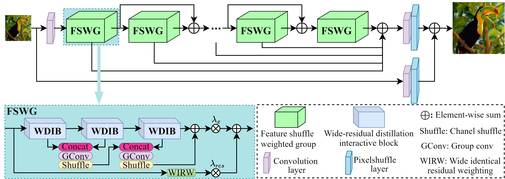
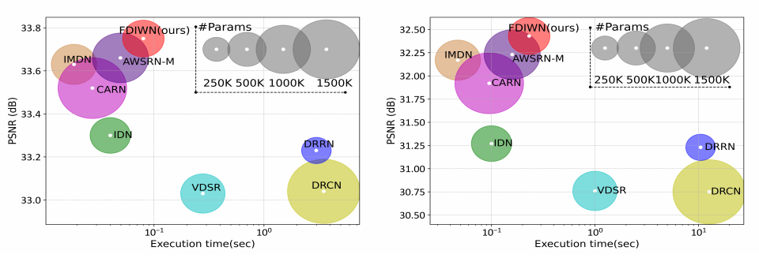
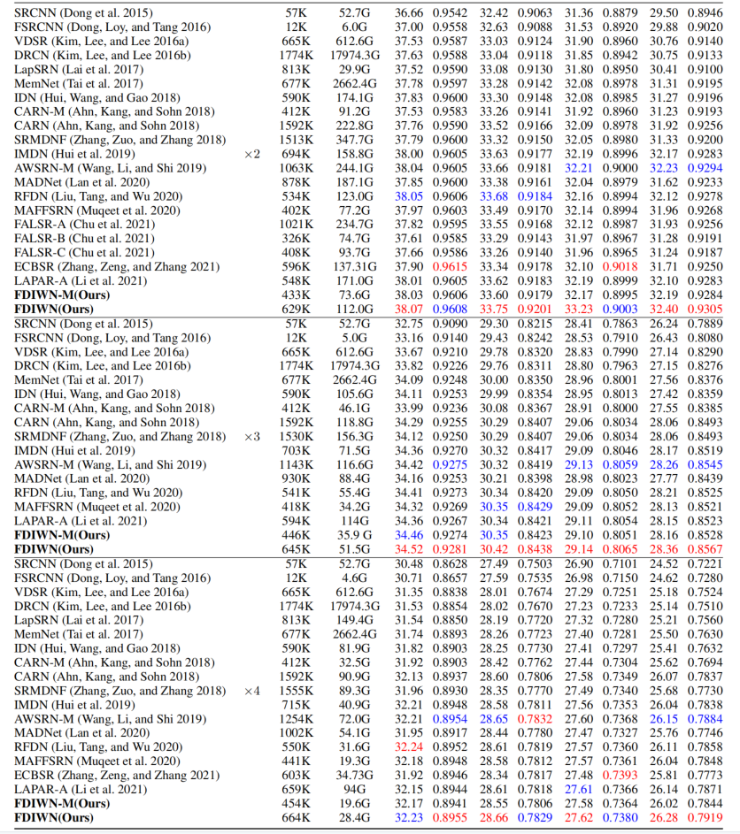

Feature Distillation Interaction Weighting Network for
|
Abstract
Convolutional neural networks based single-image super-resolution (SISR) has made great progress in recent years. However, it is difficult to apply these methods to real-world scenarios due to the computational and memory cost. Meanwhile, how to take full advantage of the intermediate features under the constraints of limited parameters and calculations is also a huge challenge. To alleviate these issues, we propose a lightweight yet efficient Feature Distillation Interaction Weighted Network (FDIWN). Specifically, FDIWN utilizes a series of specially designed Feature Shuffle Weighted Groups (FSWG) as the backbone, and several novel mutual Wide-residual Distillation Interaction Blocks (WDIB) form an FSWG. In addition, Wide Identical Residual Weighting (WIRW) units and Wide Convolutional Residual Weighting (WCRW) units are introduced into WDIB for better feature distillation. Moreover, a Wide-Residual Distillation Connection (WRDC) framework and a Self-Calibration Fusion (SCF) unit are proposed to interact features with different scales more flexibly and efficiently. Extensive experiments show that our FDIWN is superior to other models to strike a good balance between model performance and efficiency. The code is available at https://github.com/IVIPLab/FDIWN.
FDIWN
|  |
| The architecture of the proposed Feature Distillation Interaction Weighting Network (FDIWN). |
|
| The structure of the proposed Wide-residual Distillation Interaction Block (WDIB). Conv1 and Conv3 represent the convolutional layer with the kernel size of 1 and 3, respectively. |
Visual Results
|  |
| Inference speed study on Set14 (left) and Urban100 (right) with x2 SR. |
 |
| Visual comparisons on the Urban100 dataset. |
PSNR/SSIM Results
|  |
Downloads
| Paper | : [ Paper ] |
| Supp Material | : [ Supplementary Material(提取码:9168) ] |
| Source Code | : [ Code ] |
BibTex